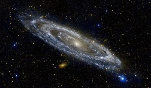

Guia das Galáxias

Galáxia de Andrômeda
A galáxia de Andrômeda (português brasileiro) ou galáxia de Andrómeda (português europeu) (Messier 31, NGC 224)
é uma galáxia espiral localizada a cerca de 2,54 milhões de anos-luz de distância da Terra, na direção da constelação de Andrômeda.
Dados Interessantes
- Depois da Via-lactea, é a galáxia mais estudada.
- Suas duas galáxias satélite, Messier 32 e Messier 110, são visíveis em binóculos.
- Sua distância em relação a Terra ainda não foi bem definida.
Veja outras galáxias
Magalhães, Olho Negro